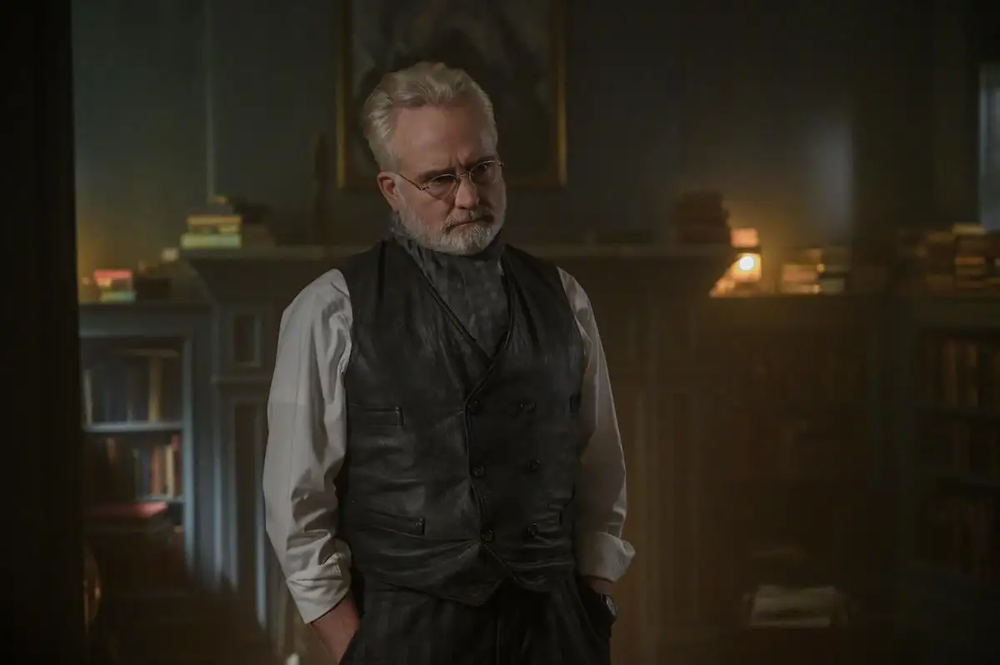
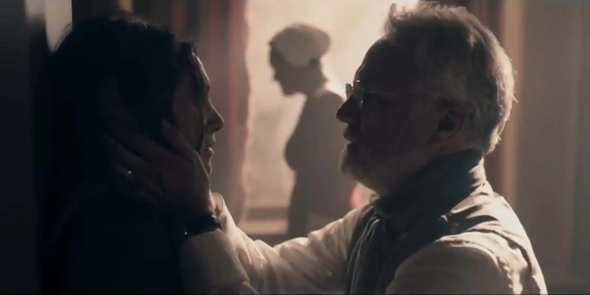
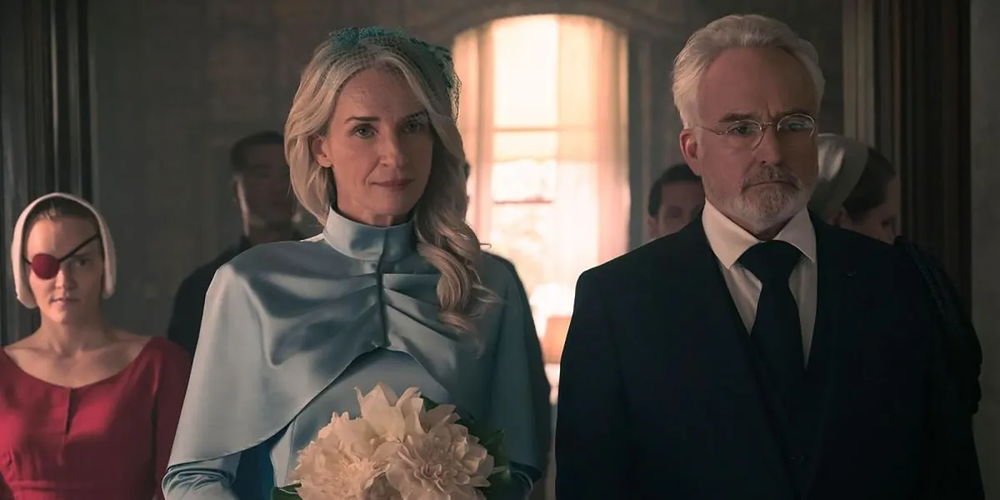

El Régimen De Gilead
Comandante Joseph Lawrence

Joseph Lawrence
Arquitecto de Gilead y aliado intermitente de Mayday
Joseph Lawrence es uno de los personajes principales de la serie. Es interpretado por Bradley Whitford.
Su inteligencia, su humor astuto y sus gestos ocasionales de amabilidad hacen que su posición dentro de Gilead resulte ambigua y difícil de anticipar.
Rol y aportaciones a Gilead
Lawrence es reconocido como el «arquitecto de la economía» de la República de Gilead.
También es el creador intelectual de las Colonias, los campos de trabajos forzados destinados a castigar a quienes el régimen considera disidentes.
A pesar de su responsabilidad en la estructura del Estado, Lawrence experimenta un profundo arrepentimiento y colabora de manera intermitente con Mayday. June es asignada a su residencia como criada bajo el nombre de Dejoseph.
Familia, alianzas y sacrificio

Eleanor Lawrence
Su primera esposa, Eleanor, padecía una severa inestabilidad mental y terminó suicidándose mediante una sobredosis de sus medicamentos.

Naomi y el destino final
Tras la muerte de Eleanor y un cambio en las circunstancias políticas, Joseph contrajo matrimonio con Naomi Putnam.
En la última temporada se sacrificó al sabotear un avión lleno de líderes del régimen para asegurar la victoria de Mayday.
Momentos decisivos
Hitos de la contradicción de Lawrence
-
01
Arquitecto del régimen
Diseña la economía de Gilead y crea el sistema de las Colonias.
-
02
Colaboración con Mayday
Su arrepentimiento lo lleva a ayudar intermitentemente a la resistencia desde una posición de poder.
-
03
Sacrificio final
Hace estallar el avión de los comandantes y muere en la operación que favorece la victoria de Mayday.